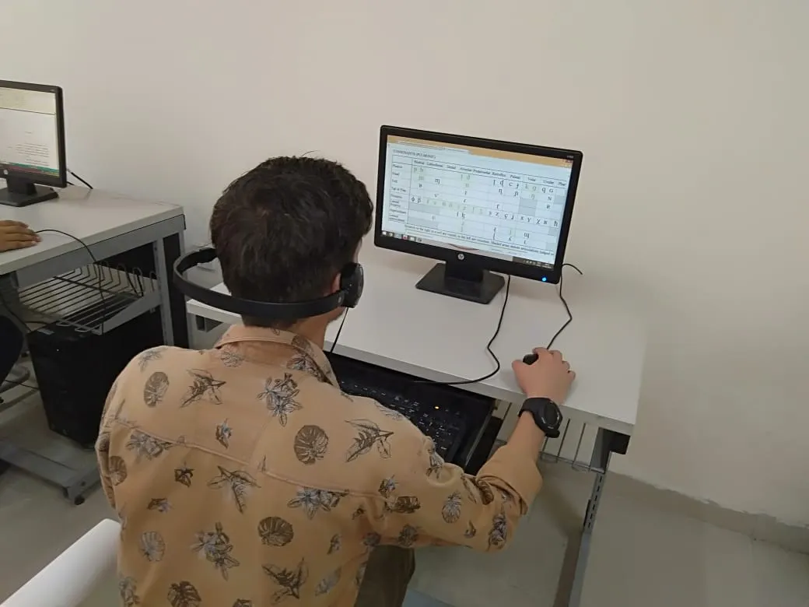

ਇਲੈਕਟ੍ਰਾਨਿਕਸ ਅਤੇ ਸੰਚਾਰ ਇੰਜੀਨੀਅਰਿੰਗ
ਇਲੈਕਟ੍ਰਾਨਿਕਸ ਅਤੇ ਸੰਚਾਰ ਇੰਜੀਨੀਅਰਿੰਗ ਇਲੈਕਟ੍ਰਾਨਿਕ ਕੰਪੋਨੈਂਟਸ, ਏਕੀਕ੍ਰਿਤ ਸਰਕਟਾਂ ਅਤੇ ਬਾਰੇ ਹੈ ਮਾਈਕ੍ਰੋਪ੍ਰੋਸੈਸਰ ਅਤੇ ਡਿਜ਼ਾਈਨ, ਫੈਬਰੀਕੇਟ, ਟੈਸਟ, ਰੱਖ-ਰਖਾਅ ਅਤੇ ਨਿਰਮਾਣ ਦੀ ਨਿਗਰਾਨੀ ਦੇ ਸ਼ਾਮਲ ਹਨ ਇਲੈਕਟ੍ਰਾਨਿਕ ਉਪਕਰਨ ਇੰਜਨੀਅਰਿੰਗ ਦੀ ਇਹ ਸ਼ਾਖਾ ਕੰਪਿਊਟਰ, ਸੂਚਨਾ ਤਕਨਾਲੋਜੀ, ਦੇ ਖੇਤਰ ਵਿੱਚ ਅਹਿਮ ਸਥਾਨ ਰੱਖਦੀ ਹੈ। ਇਲੈਕਟ੍ਰੀਕਲ, ਪਾਵਰ ਸਿਸਟਮ ਓਪਰੇਸ਼ਨ, ਸੰਚਾਰ ਪ੍ਰਣਾਲੀਆਂ ਆਦਿ।
ਯੋਗਤਾ ਪ੍ਰੋਫ਼ਾਈਲ
-
ਇਲੈਕਟ੍ਰਾਨਿਕ ਸਰਕਟਾਂ ਨੂੰ ਬਣਾਉਣ ਅਤੇ ਟੈਸਟ ਕਰਨ ਲਈ.
ਦਾ ਨਿਰਮਾਣ, ਟੈਸਟਿੰਗ ਅਤੇ ਰੱਖ-ਰਖਾਅ
ਇਲੈਕਟ੍ਰਾਨਿਕ
ਡਿਵਾਈਸਾਂ
ਅਤੇ ਸਿਸਟਮ। ਉਸਾਰੀ ਨੂੰ ਸਮਝਣ ਲਈ,
ਪਛਾਣ,
ਇਲੈਕਟ੍ਰਾਨਿਕ ਦੀਆਂ ਵਿਸ਼ੇਸ਼ਤਾਵਾਂ, ਵਿਸ਼ੇਸ਼ਤਾਵਾਂ, ਗੁਣ, ਸੀਮਾਵਾਂ ਅਤੇ ਐਪਲੀਕੇਸ਼ਨ
ਭਾਗ ਅਤੇ
ਸਮੱਗਰੀ.
ਲਾਈਨਾਂ ਸੰਚਾਰ, ਆਡੀਓ ਅਤੇ ਸਮਝਣ ਲਈ
ਵੀਡੀਓ
ਸੰਚਾਰ, ਅਤੇ ਮਾਈਕ੍ਰੋਵੇਵ ਸੰਚਾਰ|

ਸੰਖੇਪ ਵਿੱਚ ਇਲੈਕਟ੍ਰਾਨਿਕਸ ਅਤੇ ਸੰਚਾਰ ਇੰਜੀਨੀਅਰਿੰਗ
- ਸਿਗਨਲਾਂ ਦੀ ਸੰਭਾਲ ਅਤੇ ਪ੍ਰਕਿਰਿਆ: ਇਲੈਕਟ੍ਰਾਨਿਕਸ ਅਤੇ ਸੰਚਾਰ ਇੰਜਨੀਅਰਿੰਗ ਆਧੁਨਿਕ ਸੰਚਾਰ ਪ੍ਰਣਾਲੀਆਂ ਵਿੱਚ ਇੱਕ ਪ੍ਰਮੁੱਖ ਭੂਮਿਕਾ ਨਿਭਾਉਂਦੇ ਹੋਏ, ਕੁਸ਼ਲਤਾ ਨਾਲ ਜਾਣਕਾਰੀ ਨੂੰ ਸੰਚਾਰਿਤ ਕਰਨ ਅਤੇ ਪ੍ਰਾਪਤ ਕਰਨ 'ਤੇ ਕੇਂਦ੍ਰਿਤ ਹੈ।
- ਇਲੈਕਟ੍ਰਾਨਿਕ ਸਰਕਟਾਂ ਦੀ ਰਚਨਾ ਅਤੇ ਮੁਲਾਂਕਣ:ਇਸ ਖੇਤਰ ਵਿੱਚ ਵੱਖ-ਵੱਖ ਐਪਲੀਕੇਸ਼ਨਾਂ ਲਈ ਸਰਕਟਾਂ ਨੂੰ ਡਿਜ਼ਾਈਨ ਕਰਨਾ ਸ਼ਾਮਲ ਹੈ, ਇਹ ਯਕੀਨੀ ਬਣਾਉਣਾ ਕਿ ਉਹ ਪ੍ਰਭਾਵਸ਼ਾਲੀ ਅਤੇ ਭਰੋਸੇਯੋਗ ਢੰਗ ਨਾਲ ਕੰਮ ਕਰਦੇ ਹਨ।
- ਇਲੈਕਟ੍ਰਾਨਿਕ ਕੰਪੋਨੈਂਟਸ ਦਾ ਛੋਟਾਕਰਨ:ਇਲੈਕਟ੍ਰਾਨਿਕਸ ਅਤੇ ਸੰਚਾਰ ਇੰਜਨੀਅਰਿੰਗ ਛੋਟੇ ਪੈਮਾਨੇ ਦੇ ਇਲੈਕਟ੍ਰਾਨਿਕ ਉਪਕਰਨਾਂ ਅਤੇ ਏਕੀਕ੍ਰਿਤ ਸਰਕਟਾਂ ਦੇ ਡਿਜ਼ਾਈਨ ਅਤੇ ਨਿਰਮਾਣ ਵਿੱਚ ਖੋਜ ਕਰਦਾ ਹੈ, ਤਕਨਾਲੋਜੀ ਵਿੱਚ ਤਰੱਕੀ ਨੂੰ ਸਮਰੱਥ ਬਣਾਉਂਦਾ ਹੈ।
- ਡਿਜੀਟਲ ਜਾਣਕਾਰੀ ਅਤੇ ਕੋਡਿੰਗ ਥਿਊਰੀ ਨੂੰ ਸੰਭਾਲਣਾ: ਇਸ ਖੇਤਰ ਵਿੱਚ ਇੰਜੀਨੀਅਰ ਡਿਜੀਟਲ ਪ੍ਰਣਾਲੀਆਂ 'ਤੇ ਕੰਮ ਕਰਦੇ ਹਨ ਅਤੇ ਕੁਸ਼ਲ ਕੋਡਿੰਗ ਤਕਨੀਕਾਂ ਵਿਕਸਿਤ ਕਰਦੇ ਹਨ, ਇੱਕ ਡਿਜੀਟਲ ਫਾਰਮੈਟ ਵਿੱਚ ਜਾਣਕਾਰੀ ਦੀ ਪ੍ਰਕਿਰਿਆ ਅਤੇ ਪ੍ਰਸਾਰਣ ਵਿੱਚ ਯੋਗਦਾਨ ਪਾਉਂਦੇ ਹਨ।
- ਭੌਤਿਕ ਕਨੈਕਸ਼ਨਾਂ ਤੋਂ ਬਿਨਾਂ ਸੰਚਾਰ: ਇਲੈਕਟ੍ਰੋਨਿਕਸ ਅਤੇ ਸੰਚਾਰ ਇੰਜੀਨੀਅਰ ਮੋਬਾਈਲ ਸੰਚਾਰ ਅਤੇ ਸੈਟੇਲਾਈਟ ਪ੍ਰਣਾਲੀਆਂ ਵਰਗੀਆਂ ਨਵੀਨਤਾਵਾਂ ਦੁਆਰਾ ਵਿਸ਼ਵਵਿਆਪੀ ਸੰਪਰਕ ਦੀ ਸਹੂਲਤ, ਵਾਇਰਲੈੱਸ ਸੰਚਾਰ ਤਕਨਾਲੋਜੀਆਂ ਨੂੰ ਵਿਕਸਤ ਕਰਨ ਵਿੱਚ ਮੁਹਾਰਤ ਰੱਖਦੇ ਹਨ।
ਸਾਡੀਆਂ ਲੈਬਾਂ

ਟੀਵੀ ਇੰਜੀਨੀਅਰਿੰਗ ਅਤੇ ਸੰਚਾਰ ਲੈਬ
ਸਾਡੇ ਕਾਲਜ ਦੀ ਟੀਵੀ ਇੰਜੀਨੀਅਰਿੰਗ ਅਤੇ ਸੰਚਾਰ ਪ੍ਰਯੋਗਸ਼ਾਲਾ ਇੱਕ ਗਤੀਸ਼ੀਲ ਹੱਬ ਵਜੋਂ ਕੰਮ ਕਰਦੀ ਹੈ ਜਿੱਥੇ ਵਿਦਿਆਰਥੀ
ਟੈਲੀਵਿਜ਼ਨ ਸਿਗਨਲ ਪ੍ਰੋਸੈਸਿੰਗ, ਪ੍ਰਸਾਰਣ ਅਤੇ ਰਿਸੈਪਸ਼ਨ 'ਤੇ ਵਿਹਾਰਕ ਪ੍ਰਯੋਗਾਂ ਵਿੱਚ ਸ਼ਾਮਲ ਹੁੰਦੇ ਹਨ, ਤਕਨੀਕੀ ਪਹਿਲੂਆਂ
ਦੀ ਸਮਝ ਪ੍ਰਾਪਤ ਕਰਦੇ ਹਨ ਜੋ ਪ੍ਰਸਾਰਣ ਉਦਯੋਗ ਨੂੰ ਆਕਾਰ ਦਿੰਦੇ ਹਨ।
ਡਿਜੀਟਲ ਇਲੈਕਟ੍ਰਾਨਿਕਸ ਅਤੇ ਮਾਈਕ੍ਰੋਪ੍ਰੋਸੈਸਰ ਲੈਬ
ਸਾਡੇ ਕਾਲਜ ਦੀਆਂ ਡਿਜੀਟਲ ਇਲੈਕਟ੍ਰਾਨਿਕਸ ਅਤੇ ਮਾਈਕ੍ਰੋਪ੍ਰੋਸੈਸਰ ਲੈਬਸ ਇੱਕ ਹੱਥ-ਪੈਰ ਦਾ ਮਾਹੌਲ ਪ੍ਰਦਾਨ
ਕਰਦੇ ਹਨ ਜਿੱਥੇ ਵਿਦਿਆਰਥੀ ਇਲੈਕਟ੍ਰਾਨਿਕ ਸਰਕਟਾਂ, ਲੌਜਿਕ ਗੇਟਾਂ, ਅਤੇ ਮਾਈਕ੍ਰੋਕੰਟਰੋਲਰ-ਅਧਾਰਿਤ ਪ੍ਰੋਜੈਕਟਾਂ ਨਾਲ ਪ੍ਰਯੋਗ
ਕਰਦੇ ਹਨ, ਡਿਜੀਟਲ ਸੰਸਾਰ ਨੂੰ ਸ਼ਕਤੀ ਦੇਣ ਵਾਲੇ ਬੁਨਿਆਦੀ ਹਿੱਸਿਆਂ ਦੀ ਡੂੰਘੀ ਸਮਝ ਨੂੰ ਉਤਸ਼ਾਹਿਤ ਕਰਦੇ ਹਨ।
ਪ੍ਰੋਜੈਕਟ ਅਤੇ ਕੰਪਿਊਟਰ ਲੈਬ
ਸਾਡੇ ਕਾਲਜ ਵਿੱਚ ਪ੍ਰੋਜੈਕਟ ਲੈਬ ਇੱਕ ਸਹਿਯੋਗੀ ਥਾਂ ਹੈ ਜਿੱਥੇ ਵਿਦਿਆਰਥੀ ਸਿਧਾਂਤਕ ਗਿਆਨ ਨੂੰ ਵਿਹਾਰਕ
ਹੱਲਾਂ ਵਿੱਚ ਬਦਲਦੇ ਹਨ, ਵਿਭਿੰਨ ਵਿਸ਼ਿਆਂ ਵਿੱਚ ਨਵੀਨਤਾ ਅਤੇ ਟੀਮ ਵਰਕ ਨੂੰ ਉਤਸ਼ਾਹਿਤ ਕਰਦੇ ਹਨ।
ਕੰਪਿਊਟਰ ਲੈਬਾਂ ਵਿੱਚ, ਵਿਦਿਆਰਥੀ ਅਤਿ-ਆਧੁਨਿਕ ਤਕਨਾਲੋਜੀ, ਪ੍ਰੋਗਰਾਮਿੰਗ ਹੁਨਰਾਂ ਨੂੰ ਮਾਨਤਾ ਦੇਣ ਅਤੇ ਸੌਫਟਵੇਅਰ
ਡਿਵੈਲਪਮੈਂਟ ਦੀ ਖੋਜ ਕਰਦੇ ਹੋਏ, ਸਿੱਖਣ ਦੇ ਇੱਕ ਹੱਥ ਨਾਲ ਅਨੁਭਵ ਨੂੰ ਯਕੀਨੀ ਬਣਾਉਂਦੇ ਹਨ ਜੋ ਉਹਨਾਂ ਨੂੰ ਕੰਪਿਊਟਰ ਵਿਗਿਆਨ
ਦੇ ਸਦਾ-ਵਿਕਸਿਤ ਲੈਂਡਸਕੇਪ ਲਈ ਤਿਆਰ ਕਰਦਾ ਹੈ।
ਇੰਸਟਰੂਮੈਂਟੇਸ਼ਨ ਅਤੇ ਪੀ.ਐਲ.ਸੀ. ਲੈਬ
ਸਾਡੇ ਕਾਲਜ ਵਿੱਚ ਇੰਸਟਰੂਮੈਂਟੇਸ਼ਨ ਅਤੇ P.L.C (ਪ੍ਰੋਗਰਾਮੇਬਲ ਲਾਜਿਕ ਕੰਟਰੋਲਰ) ਲੈਬ ਵਿਦਿਆਰਥੀਆਂ ਨੂੰ
ਉਦਯੋਗਿਕ ਆਟੋਮੇਸ਼ਨ ਦੇ ਸਿਧਾਂਤਾਂ ਦੀ ਪੜਚੋਲ ਕਰਨ, ਸੈਂਸਰਾਂ, ਐਕਚੂਏਟਰਾਂ, ਅਤੇ ਨਿਯੰਤਰਣ ਪ੍ਰਣਾਲੀਆਂ ਦੇ ਏਕੀਕਰਣ ਵਿੱਚ
ਮੁਹਾਰਤ ਹਾਸਲ ਕਰਨ ਲਈ ਇੱਕ ਹੈਂਡ-ਆਨ ਪਲੇਟਫਾਰਮ ਪ੍ਰਦਾਨ ਕਰਦੀ ਹੈ।
ਇਲੈਕਟ੍ਰੀਕਲ ਮਸ਼ੀਨ ਲੈਬ
ਸਾਡੇ ਕਾਲਜ ਵਿੱਚ ਇਲੈਕਟ੍ਰੀਕਲ ਮਸ਼ੀਨ ਲੈਬ ਇੱਕ ਗਤੀਸ਼ੀਲ ਜਗ੍ਹਾ ਹੈ ਜਿੱਥੇ ਵਿਦਿਆਰਥੀ ਜਨਰੇਟਰ, ਮੋਟਰਾਂ
ਅਤੇ ਟ੍ਰਾਂਸਫਾਰਮਰਾਂ ਸਮੇਤ ਇਲੈਕਟ੍ਰੀਕਲ ਮਸ਼ੀਨਾਂ ਦੇ ਸਿਧਾਂਤਾਂ ਅਤੇ ਐਪਲੀਕੇਸ਼ਨਾਂ ਨੂੰ ਸਮਝਣ ਲਈ ਵਿਹਾਰਕ ਪ੍ਰਯੋਗਾਂ ਵਿੱਚ
ਸ਼ਾਮਲ ਹੁੰਦੇ ਹਨ।
ਬੇਸਿਕ ਇਲੈਕਟ੍ਰੋਨਿਕਸ ਲੈਬ
ਸਾਡੇ ਕਾਲਜ ਵਿੱਚ ਬੇਸਿਕ ਇਲੈਕਟ੍ਰੋਨਿਕਸ ਲੈਬ ਇੱਕ ਬੁਨਿਆਦੀ ਜਗ੍ਹਾ ਦੇ ਤੌਰ 'ਤੇ ਕੰਮ ਕਰਦੀ ਹੈ ਜਿੱਥੇ
ਵਿਦਿਆਰਥੀ ਇਲੈਕਟ੍ਰਾਨਿਕ ਸਰਕਟਾਂ ਨੂੰ ਬਣਾਉਣ ਅਤੇ ਵਿਸ਼ਲੇਸ਼ਣ ਕਰਨ ਦਾ ਤਜਰਬਾ ਹਾਸਲ ਕਰਦੇ ਹਨ, ਇਲੈਕਟ੍ਰਾਨਿਕ ਸਿਧਾਂਤਾਂ ਦੀ
ਡੂੰਘੀ ਸਮਝ ਲਈ ਆਧਾਰ ਤਿਆਰ ਕਰਦੇ ਹਨ।